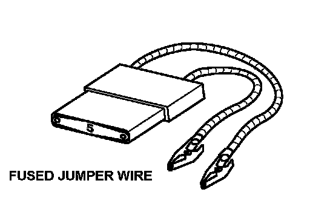
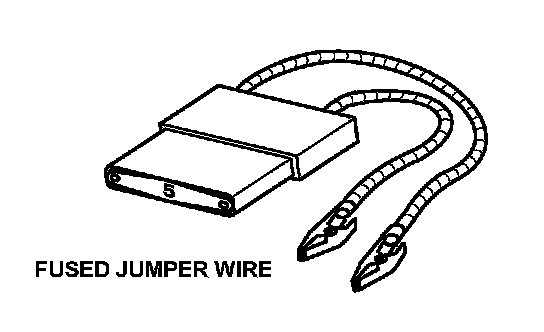

Test Equipment
Test EquipmentCAUTION: Most circuits include solid-state devices. Test the voltages in these circuits only with a 1O-megohms or higher impedance digital multimeter. Never use a test light or analog meter on circuits that contain solid-state devices. Damage to the devices may result.
Test Light and DVOM
On circuits without solid-state devices, use a test light to check for voltage. A test light is made up of a 12 volt bulb with a pair of leads attached. After grounding one lead, touch the other lead to various points along the circuit where voltage should be present. The bulb will go on if there is voltage at the point being tested. If you need to know how much voltage is present, use a digital volt/ohmmeter (DVOM). If, in addition, you need to know exactly how much resistance there is between two points, use a digital volt/ohmmeter (DVOM).
In the "OHMS" range, the DVOM will measure resistance between two points along a circuit. Low resistance means good continuity.
Diodes and solid-state devices in a circuit can make a DVOM give a false reading. To check a reading, reverse the leads, and take a second reading. If the readings differ, the component is affecting the measurement.

To order any test equipment shown, contact your local tool supplier. For a list of suppliers and tool numbers, refer to Honda Required Special Tools and Equipment Service Bulletin.
Jumper Wire
Use a jumper wire to bypass an open circuit. A jumper wire is made up of an in-line fuse holder connected to a set of test leads. It should have a five ampere fuse. Never connect a jumper wire across a short circuit. The direct battery short will blow the fuse.

To order any test equipment shown, contact your local tool supplier. For a list of suppliers and tool numbers, refer to Honda Required Special Tools and Equipment Service Bulletin.